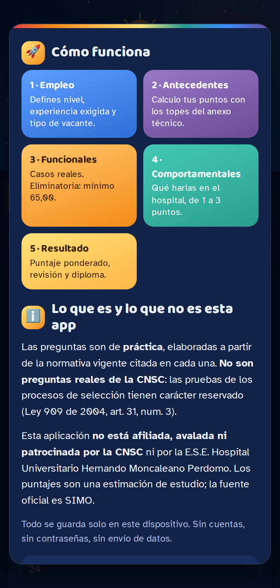
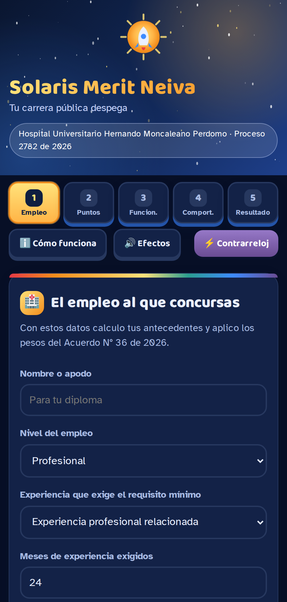
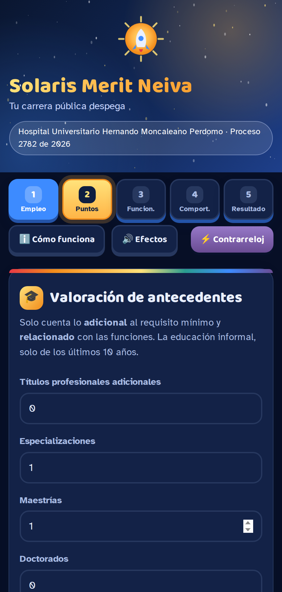
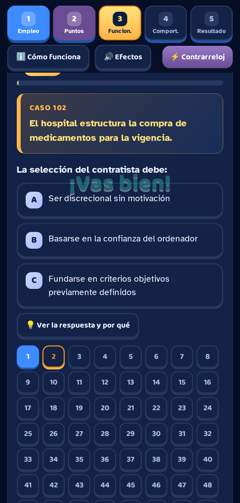
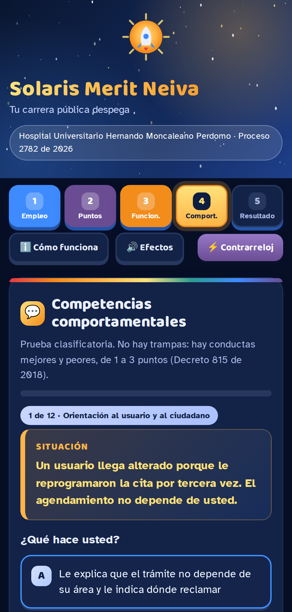
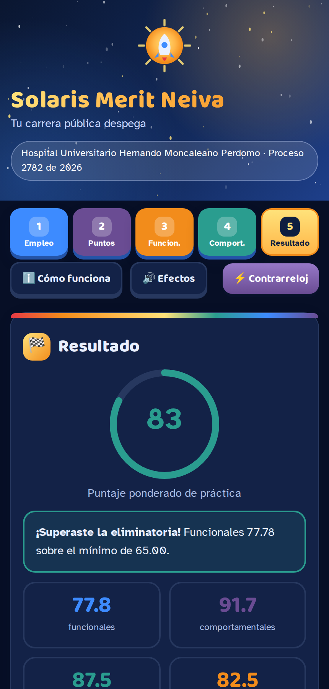
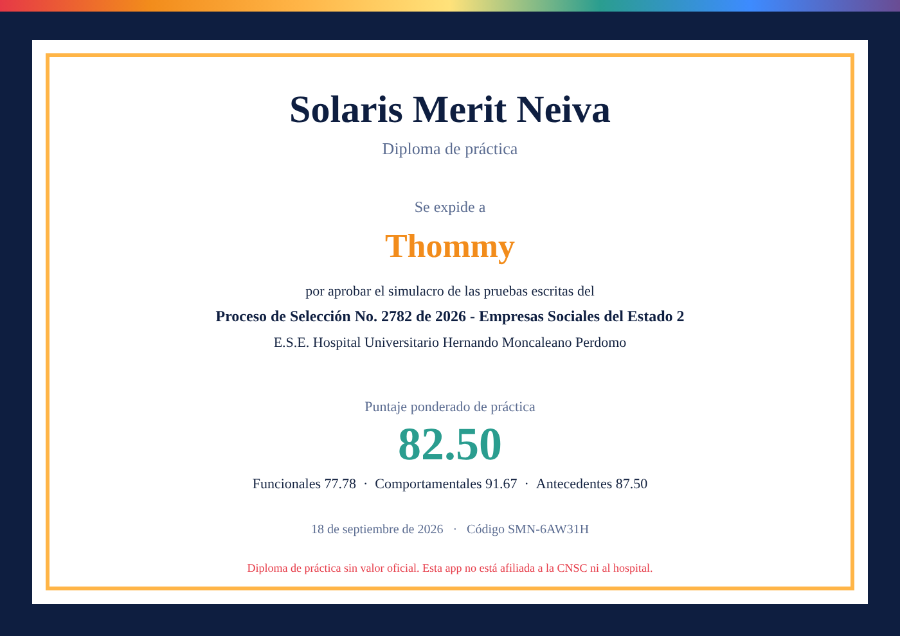
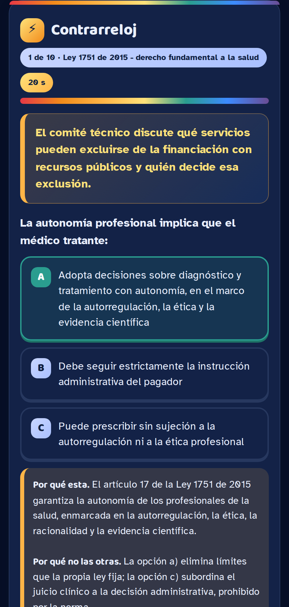
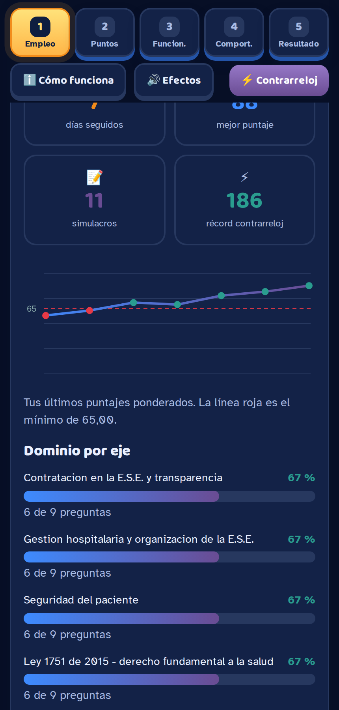

Simulador de práctica de las pruebas escritas Proceso de Selección No. 2782 de 2026 · Empresas Sociales del Estado 2
E.S.E. Hospital Universitario Hernando Moncaleano Perdomo · Neiva, Huila
Convocado por el Acuerdo CNSC N° 36 del 9 de abril de 2026
Versión de septiembre de 2026 · Juan Gómez
https://ttonguinon.github.io/solaris-merit-moncaleano/
1. Qué es esta aplicación y qué no es
Solaris Merit Neiva es un simulador de práctica. Reproduce la mecánica de las pruebas escritas del concurso de méritos y calcula un puntaje estimado con las mismas reglas del acuerdo de convocatoria, para que el aspirante sepa dónde está parado antes de presentarse.
Advertencia obligatoria. Las preguntas de esta aplicación son de elaboración propia a partir de normativa pública. No son preguntas reales de una prueba de la CNSC: las pruebas de los procesos de selección tienen carácter reservado, conforme al artículo 31, numeral 3, de la Ley 909 de 2004. Esta aplicación no está afiliada, avalada ni patrocinada por la CNSC ni por la E.S.E. Hospital Universitario Hernando Moncaleano Perdomo. Los puntajes que entrega son una estimación de estudio, nunca un resultado oficial. La fuente oficial del proceso es SIMO.
Lo que sí hace
Entrena con 552 preguntas funcionales organizadas en 184 casos y 17 ejes temáticos, 291 preguntas de repaso y 137 situaciones comportamentales.
Muestra, bajo cada respuesta, la norma que la sustenta con su año de publicación, la razón de la respuesta correcta y por qué no sirven las otras dos opciones.
Estima la Valoración de Antecedentes con los topes del anexo técnico del proceso.
Aplica los pesos del acuerdo y avisa si el aspirante quedaría eliminado.
Funciona sin conexión a internet una vez instalada, y guarda el avance solo en el dispositivo.
Lo que no hace
No inscribe, no reemplaza ningún trámite y no se comunica con SIMO ni con la CNSC.
No pide cuenta, correo ni contraseña, y no envía información a ningún servidor.
No certifica ni acredita nada: el diploma que expide dice expresamente que es de práctica.
2. Glosario de siglas
Todas las siglas que aparecen en la aplicación y en este instructivo, con su significado completo.
CNSC
Comisión Nacional del Servicio Civil. Entidad que administra y vigila la carrera administrativa y convoca los procesos de selección.
SIMO
Sistema de apoyo para la Igualdad, el Mérito y la Oportunidad. Es la plataforma oficial de la CNSC donde el aspirante se inscribe y consulta resultados, citaciones y alertas.
OPEC
Oferta Pública de Empleos de Carrera. Es el listado de empleos vacantes que la entidad reporta y que se ofertan en el proceso; cada empleo tiene un número de OPEC.
VRM
Verificación de Requisitos Mínimos. Etapa en la que la CNSC comprueba si el aspirante cumple los requisitos de estudio y experiencia del empleo. Quien no los acredita queda inadmitido.
E.S.E.
Empresa Social del Estado. Categoría especial de entidad pública descentralizada prestadora de servicios de salud, definida en el artículo 194 de la Ley 100 de 1993.
ETDH
Educación para el Trabajo y el Desarrollo Humano. Formación que se acredita con certificados de conocimientos académicos o de aptitud ocupacional (técnico laboral por competencias).
PBS
Plan de Beneficios en Salud, financiado con la Unidad de Pago por Capitación.
UPC
Unidad de Pago por Capitación. Valor anual que el sistema reconoce por cada afiliado (artículo 182 de la Ley 100 de 1993).
ADRES
Administradora de los Recursos del Sistema General de Seguridad Social en Salud (Ley 1753 de 2015).
SGSSS
Sistema General de Seguridad Social en Salud.
REPS
Registro Especial de Prestadores de Servicios de Salud, donde el prestador se inscribe y declara sus servicios (Resolución 3100 de 2019).
SOGCS
Sistema Obligatorio de Garantía de Calidad de la Atención en Salud, compilado en el Decreto 780 de 2016.
PAMEC
Programa de Auditoría para el Mejoramiento de la Calidad de la Atención en Salud, componente del SOGCS.
SIAU
Sistema de Información y Atención al Usuario, por donde se tramitan quejas, reclamos y sugerencias.
PQRSD
Peticiones, Quejas, Reclamos, Sugerencias y Denuncias.
CRUE
Centro Regulador de Urgencias y Emergencias, que coordina la referencia de pacientes (Resolución 1220 de 2010).
IAAS
Infecciones Asociadas a la Atención en Salud.
CPACA
Código de Procedimiento Administrativo y de lo Contencioso Administrativo, Ley 1437 de 2011, reformada por la Ley 2080 de 2021.
CDU
Código General Disciplinario, Ley 1952 de 2019, modificada por la Ley 2094 de 2021.
MIPG
Modelo Integrado de Planeación y Gestión (Decreto 1499 de 2017).
SECOP
Sistema Electrónico para la Contratación Pública, donde se publica la actividad contractual (Ley 1712 de 2014 y artículo 53 de la Ley 2195 de 2022).
PWA
Progressive Web App, o aplicación web progresiva: una página que se instala en el celular como si fuera una aplicación y funciona sin internet.
SG-SST
Sistema de Gestión de la Seguridad y Salud en el Trabajo (Decreto 1072 de 2015).
3. Antes de empezar
Cómo abrir la aplicación
Entre desde el celular o el computador a https://ttonguinon.github.io/solaris-merit-moncaleano/, o escanee el código QR que acompaña este instructivo.
No necesita registrarse. La aplicación abre directamente.
Cómo instalarla en el celular
Al abrir por primera vez aparece una ventana de bienvenida. Lo primero que verá allí es la franja verde «Instálala en tu celular» con el botón ⬇️ Instalar.
Android, con Chrome: toque el botón ⬇️ Instalar. Si no aparece, use el menú de tres puntos del navegador y elija Instalar aplicación.
iPhone, con Safari: el botón no se muestra porque Safari no lo permite. Toque el botón de compartir y elija Agregar a pantalla de inicio.
Computador, con Chrome o Edge: el icono de instalar aparece al final de la barra de direcciones.
Ventaja de instalarla. Queda con su propio icono, abre a pantalla completa y funciona sin internet: la aplicación y las 360 preguntas quedan guardadas en el dispositivo. Es útil para estudiar en el transporte o en zonas sin señal. Cuando hay conexión, revisa si el banco de preguntas cambió y toma las nuevas.
La ventana de bienvenida
Debajo del botón de instalación, la misma ventana explica el recorrido de los cinco pasos y presenta el aviso legal. Trae la casilla «No volver a mostrar esto», marcada de fábrica: si la deja marcada y cierra con Entendido, a practicar, la ventana no vuelve a aparecer en ese dispositivo. Para consultarla otra vez, use el botón ℹ️ Cómo funciona de la barra superior.

Ventana de bienvenida con el botón de instalación

Pantalla de inicio con la escalera de cinco pasos
La barra superior
Escalera de cinco pasos: muestra en qué punto va. El paso actual late en dorado y los completados se pintan con su color. Puede tocar cualquier paso para moverse.
ℹ️ Cómo funciona: reabre la ventana de bienvenida.
🔊 Efectos: apaga o enciende los sonidos y el confeti.
⚡ Contrarreloj: abre el juego de diez preguntas cronometradas, explicado en el capítulo 9.
1
Paso 1 · El empleo al que concursa
Estos datos no se envían a ninguna parte: sirven para que la aplicación calcule sus antecedentes con la tabla correcta y aplique los pesos que corresponden a su vacante.
Campo
Qué debe escribir
Nombre o apodo
El nombre que aparecerá en el diploma de práctica si aprueba. Puede poner cualquier cosa.
Nivel del empleo
Profesional o Técnico. Cambia por completo la tabla de puntajes de antecedentes y los campos que se le piden en el paso 2.
Experiencia que exige el requisito mínimo
Lo que dice el manual de funciones del empleo. En el nivel profesional se elige entre experiencia profesional relacionada y experiencia profesional; en el nivel técnico, entre experiencia relacionada y experiencia laboral. Esta elección invierte los topes de los dos factores de experiencia.
Meses de experiencia exigidos
El número de meses que pide el requisito mínimo. Solo puntúa lo que supere esa cifra.
Posgrado exigido
Si el requisito mínimo ya pide especialización o maestría, ese título no vuelve a puntuar como adicional.
Empleo o vacante
Opcional. El nombre y código del empleo, por ejemplo «Profesional Universitario 219-19». Aparece en el diploma.
Casilla de reserva
Márquela solo si su vacante es de las reservadas para personas con discapacidad. Los pesos cambian y en antecedentes solo puntúa la educación, conforme al parágrafo del artículo 5 de la Ley 2418 de 2024.
Al terminar, pulse Guardar y seguir.
2
Paso 2 · Valoración de antecedentes
La Valoración de Antecedentes es una prueba clasificatoria: no elimina, pero suma. Se califica sobre 100 puntos y luego se pondera. Aquí se registra únicamente lo que usted puede acreditar con documentos.
Dos reglas que deciden si un documento puntúa. a) Solo lo adicional. Únicamente cuenta la educación y la experiencia que exceden el requisito mínimo del empleo. Si el empleo pide título profesional y usted es profesional, ese título no suma; sumaría una especialización adicional. b) Solo lo relacionado. La formación debe estar relacionada con las funciones del empleo. Un diplomado en un tema ajeno al cargo no puntúa.
Aclaración sobre los certificados de los últimos 10 años. En el factor de educación informal (diplomados, cursos, seminarios, talleres y congresos) solo se tienen en cuenta los certificados obtenidos dentro de los diez (10) años anteriores a la fecha de cierre de las inscripciones. Un curso más antiguo, por bueno que sea, no otorga puntaje en ese factor. Este límite de diez años aplica únicamente a la educación informal: la educación formal (títulos de pregrado y posgrado) y los certificados de ETDH no tienen esa restricción temporal, así como tampoco la tiene la experiencia. Al llenar el campo de horas, sume solo las horas de los certificados que estén dentro de esos diez años.
Qué se registra en cada campo
Campo
Qué contar
Títulos profesionales adicionales, especializaciones, maestrías y doctorados (nivel profesional)
Cantidad de títulos adicionales al requisito mínimo y relacionados con las funciones.
Títulos tecnológicos, de técnica profesional y sus especializaciones (nivel técnico)
Igual criterio: adicionales y relacionados.
Horas de educación informal
Total de horas certificadas, solo de los últimos diez años, en formación relacionada.
Certificados de ETDH, formación académica
Número de certificados de conocimientos académicos relacionados con el empleo.
Certificados de ETDH, formación laboral
Número de certificados de aptitud ocupacional, técnico laboral por competencias.
Meses de experiencia acreditados
El total que puede certificar. La aplicación resta sola los meses exigidos por el requisito mínimo.
Cómo se puntúa cada factor
Los topes son los del Anexo Técnico E.S.E. 2, orden territorial, del Proceso de Selección No. 2782 de 2026.
Factor
Nivel profesional
Nivel técnico
Experiencia del primer factor (la que exige el requisito)
40
40
Experiencia del segundo factor
15
10
Educación formal adicional
25
20
Educación informal (últimos 10 años)
5
5
ETDH, formación académica
10
5
ETDH, formación laboral
5
20
Total
100
100
Si el requisito mínimo exige la experiencia del segundo factor, los topes de 40 y 15 (o de 40 y 10) se invierten. En educación formal del nivel profesional se asignan 25 puntos por doctorado, 20 por maestría, 15 por título profesional adicional y 10 por especialización, con tope de 25. En el nivel técnico, 20 por título tecnológico, 15 por técnica profesional, 10 por especialización tecnológica y 5 por especialización técnica profesional, con tope de 20. La educación informal se puntúa por rangos de horas: de 8 a 23 horas, 1 punto; de 24 a 39, 2; de 40 a 55, 3; de 56 a 71, 4; y 72 horas o más, 5 puntos.
Sobre el puntaje de experiencia. La aplicación lo estima: asume que 60 meses adicionales al requisito mínimo alcanzan el tope del factor. El reparto exacto por rangos de meses lo aplica la CNSC al calificar. Use esa cifra para orientarse, no como resultado oficial.

Paso 2: cada factor con su puntaje y el anillo con el total sobre 100
3
Paso 3 · Competencias funcionales
Es la prueba eliminatoria. Pesa el 60 % y exige un puntaje mínimo aprobatorio de 65,00. Quien no lo alcanza queda fuera del proceso y sus antecedentes ni siquiera se califican.
Antes de iniciar
Tamaño del simulacro: corto, 45 preguntas, unos 45 minutos; estándar, 90 preguntas; largo, 180 preguntas, unas tres horas. Cada caso trae tres enunciados. El estándar se ajustará al número oficial de preguntas cuando la CNSC publique la guía de orientación al aspirante del Proceso E.S.E. 2, que a septiembre de 2026 aún no ha sido publicada.
Nivel de dificultad: todas, fácil, normal o difícil. Fácil corresponde a preguntas que piden recordar una regla; normal, a aplicarla a un caso; difícil, a decidir entre dos reglas que compiten. Si el nivel elegido no alcanza para el tamaño pedido, la aplicación lo advierte y arma el simulacro con los casos disponibles.
Repaso rápido, nivel fácil: usa un banco aparte de 291 preguntas cortas y directas, en 97 casos. Sirve para calentar o refrescar conceptos y nunca se mezcla con el banco principal. Durante la prueba aparece la marca 📗 repaso y el resultado lo advierte.
🎯 Entrenar mis ejes débiles: arma el simulacro únicamente con los ejes en los que usted va por debajo de 65 %. Requiere haber hecho al menos un simulacro antes.
Soporte normativo al responder (activado de fábrica): apenas marque una opción verá la norma con su año, la razón de la respuesta correcta y por qué no sirven las otras dos. Si lo desactiva, las explicaciones quedan solo para la revisión final.
Modo práctica: muestra la explicación de inmediato y apaga el cronómetro. Sin esta casilla, el cronómetro corre para que mida su ritmo.
Durante la prueba
Lea el caso, resaltado en amarillo: describe una situación de trabajo del hospital.
Lea el enunciado y elija una de las tres opciones.
Aparece el marcador («✓ acertada · llevas 12 de 15») y, debajo, la explicación con su fuente normativa.
Avance con el botón Siguiente →. Hay uno arriba y otro al final de la explicación. Nada avanza solo: usted decide cuándo pasar.
Los números bajo la pregunta permiten saltar a cualquier punto; los azules son los ya resueltos.
El botón 💡 Ver la respuesta y por qué revela la solución, pero marca la pregunta como no acertada.
Al final, pulse Terminar funcionales. Si deja preguntas sin responder, la aplicación advierte y las cuenta como no acertadas.

Una pregunta respondida, con el marcador y el soporte normativo
Dos bancos en un mismo archivo
La aplicación trabaja con dos conjuntos de preguntas que no se mezclan. El banco principal, de 552 preguntas en 184 casos, presenta situaciones largas con datos y tensión, donde las tres opciones son conductas defendibles; es el que se usa en los simulacros de todas las dificultades. El repaso rápido, de 291 preguntas en 97 casos, reúne preguntas cortas y directas, útiles para refrescar conceptos, y solo aparece cuando el aspirante lo elige en el selector.
Los diecisiete ejes temáticos
El simulacro reparte los casos entre todos los ejes. Cada pregunta cita la norma vigente con su año.
Eje
Normas principales que evalúa
Sistema de salud y Ley 100 de 1993
Ley 100 de 1993, Ley 715 de 2001, Ley 1122 de 2007, Ley 1438 de 2011, Decreto 780 de 2016
Derecho fundamental a la salud
Ley 1751 de 2015 (estatutaria), Ley 1755 de 2015
Habilitación y calidad
Resolución 3100 de 2019, Decreto 780 de 2016, Resolución 256 de 2016
Seguridad del paciente
Política de Seguridad del Paciente, Resolución 4816 de 2008 (tecnovigilancia), Resolución 1403 de 2007
Historia clínica y protección de datos
Resolución 1995 de 1999 y su modificatoria Resolución 839 de 2017, Ley 1581 de 2012, Decreto 1377 de 2013, Ley 2015 de 2020
Humanización y derechos del paciente
Resolución 13437 de 1991, Ley 1618 de 2013, Ley 1733 de 2014
Referencia y contrarreferencia
Resolución 3047 de 2008, Resolución 1220 de 2010, Resolución 3280 de 2018
Urgencias
Resolución 5596 de 2015 (triage), Ley 1751 de 2015 art. 14, Ley 1616 de 2013
Gestión hospitalaria y organización de la E.S.E.
Decreto 1876 de 1994, Ley 1608 de 2013, Decreto 1499 de 2017, Ley 87 de 1993
Contratación en la E.S.E. y transparencia
Ley 100 de 1993 art. 195, Ley 1150 de 2007, Ley 1438 de 2011 art. 76, Resolución 5185 de 2013, Ley 1712 de 2014, Ley 2195 de 2022
Régimen disciplinario y CPACA
Ley 1952 de 2019 con Ley 2094 de 2021, Ley 1437 de 2011 con Ley 2080 de 2021
Precisión jurídica del verbo
Ley 1437 de 2011, Ley 153 de 1887, Ley 909 de 2004, Acuerdo CNSC N° 36 de 2026
Constitución Política y derechos fundamentales
Constitución Política de 1991, Decreto 2591 de 1991, Ley 1755 de 2015, Ley 1581 de 2012
Estructura del Estado y niveles de gobierno
Ley 489 de 1998, Ley 715 de 2001, Ley 2056 de 2020, Ley 87 de 1993, Decreto 1499 de 2017
Contratación estatal
Ley 80 de 1993, Ley 1150 de 2007, Ley 1474 de 2011, Ley 2013 de 2019, Decreto 1082 de 2015
Empleo público y carrera administrativa
Constitución Política de 1991, art. 125; Ley 909 de 2004; Ley 1960 de 2019; Decreto 1083 de 2015
Transparencia y acceso a la información pública
Ley 1712 de 2014, Ley 1755 de 2015, Decreto 103 de 2015
Los tres últimos ejes evalúan conocimiento del Estado más allá del sector salud: derechos fundamentales y su protección, organización del Estado en los niveles nacional, departamental y municipal, y contratación de las entidades regidas por el Estatuto General. Conviene no confundirlos con el eje de contratación de la E.S.E., que se rige por derecho privado conforme al artículo 195 de la Ley 100 de 1993.
El eje del verbo merece atención. En sus casos las tres opciones son plausibles y lo único que decide es el verbo: inadmitir no es excluir; declarar desierta recae sobre la vacante y no sobre el aspirante; revocar lo hace la administración y anular lo hace el juez; notificar aplica a los actos particulares, comunicar a los de trámite y publicar a los generales. Es el eje donde más puntos se pierden por lectura apresurada.
4
Paso 4 · Competencias comportamentales
Prueba clasificatoria. Presenta doce situaciones de trabajo tomadas de un banco de 137. No hay opciones trampa: hay conductas mejores y peores, puntuadas de 1 a 3 según las competencias del Decreto 815 de 2018, que establece las competencias laborales generales de los empleos públicos.
3 puntos: la conducta resuelve el problema y respeta el procedimiento.
2 puntos: lo atiende parcialmente.
1 punto: lo evade o traslada el problema a otro.
Al elegir, las opciones se bloquean y aparece cuánto sumó y el acumulado, junto con una nota que indica qué competencia mide la situación. Se avanza con Siguiente → y la última pregunta lleva a Ver resultado.

Paso 4: situación comportamental con sus tres conductas
5
Paso 5 · Resultado y diploma
Cómo se calcula el puntaje
Prueba
Carácter
Peso general
Vacante de reserva
Competencias funcionales
Eliminatoria, mínimo 65,00
60 %
60 %
Competencias comportamentales
Clasificatoria
20 %
30 %
Valoración de antecedentes
Clasificatoria
20 %
10 %
El puntaje ponderado es la suma de cada prueba multiplicada por su peso. Si el puntaje de funcionales queda por debajo de 65,00, la aplicación declara la eliminación y no calcula ponderado, tal como ocurriría en el concurso.
Qué muestra la pantalla
Un anillo con el puntaje: verde si aprueba, rojo si queda eliminado.
Las cuatro cifras: funcionales, comportamentales, antecedentes y ponderado.
La tabla de aporte de cada prueba, con peso, puntaje y aporte al total.
El desglose de antecedentes factor por factor.
Los ejes ordenados de peor a mejor, en rojo los que estén por debajo de 65 %.
La revisión completa de todas las preguntas, con su explicación, su fuente y el «por qué no las otras».
Si aprueba, el botón 🎓 Descargar mi diploma genera una imagen PNG con su nombre, el puntaje, la fecha, un código y la leyenda de que es un diploma de práctica sin valor oficial.

Pantalla de resultado

Diploma de práctica
9. Contrarreloj
Es un juego de repaso, no una prueba del concurso. Se abre con el botón ⚡ Contrarreloj de la barra superior.
Diez preguntas tomadas al azar de todo el banco, con veinte segundos cada una.
Cada acierto suma 10 puntos más los segundos que le sobraban al responder.
Al responder, el cronómetro se detiene, se marca en verde la opción correcta aunque haya fallado y aparece la explicación con su norma. No avanza solo: se pasa con Siguiente ⚡. Leer con calma no le quita puntos.
El récord personal queda guardado en el dispositivo y se ve en el panel de progreso.

Contrarreloj: respuesta con su soporte normativo
10. Su progreso
En la pantalla de inicio, debajo del paso 1, la tarjeta Tu progreso reúne cuatro indicadores: días seguidos practicando, mejor puntaje, número de simulacros y récord del contrarreloj. Debajo, una gráfica con los últimos doce puntajes ponderados y una línea roja punteada en 65, el mínimo aprobatorio. Y por último, las barras de dominio por eje, ordenadas de peor a mejor: las que aparecen en rojo están por debajo del mínimo y son, literalmente, dónde debe poner sus horas de estudio.
El botón Borrar mis datos de este dispositivo elimina el perfil, los antecedentes y el progreso. No se puede deshacer.

Panel de progreso con la gráfica y el dominio por eje
11. El banco de preguntas y las normas
En la pantalla de inicio, la tarjeta El banco de preguntas muestra la tabla de ejes con sus casos y preguntas, y dos desplegables:
📖 Normas que evalúa el banco: las 279 referencias normativas citadas, ordenadas por número de preguntas. Sirve como lista de repaso por sí sola.
🔗 Enlaces de importancia: SIMO, la página del proceso Empresas Sociales del Estado 2 en el sitio de la CNSC, el Acuerdo N° 36 de 2026, el Anexo Técnico E.S.E. 2 de orden territorial y el normograma del hospital.
Ejemplo de por qué importa el año de la norma. La Resolución 1732 de 2026 derogaba la Resolución 3100 de 2019, que regula la habilitación de servicios de salud. Sin embargo, la Resolución 2080 de 2026 revocó íntegramente la 1732 antes de que produjera efectos, de modo que la Resolución 3100 de 2019 sigue vigente. El banco incluye preguntas sobre este tipo de situaciones, porque es donde más puntaje se pierde.
12. Preguntas frecuentes
¿Me sirve el puntaje para el concurso?
No. Es una estimación de estudio. El puntaje oficial lo publica la CNSC en SIMO.
¿Puedo usarla sin internet?
Sí, una vez que la haya abierto al menos una vez con conexión, o después de instalarla.
¿Se guardan mis datos en algún servidor?
No. Todo queda en el almacenamiento del navegador de su dispositivo. Si borra los datos del navegador o usa otro equipo, empieza de cero.
¿Por qué las preguntas cambian cada vez?
Porque cada simulacro toma casos distintos y baraja el orden de las opciones. Con 120 casos disponibles, un simulacro largo usa la mitad del banco.
¿Qué pasa si respondo todo correctamente pero mi vacante es de reserva?
Los pesos cambian a 60 %, 30 % y 10 %, y en antecedentes solo puntúa la educación. La aplicación lo hace sola al marcar la casilla del paso 1.
¿Las preguntas están actualizadas?
El banco fue verificado a septiembre de 2026. Antes de la prueba conviene confirmar la vigencia de las normas en el normograma del hospital, en la Secretaría del Senado o en el Sistema Único de Información Normativa, SUIN-Juriscol.
13. Versión del banco, reinicio y otras funciones
Cómo saber qué versión está usando
La tarjeta del banco, en la pantalla de inicio, muestra la versión del banco y una huella de contenido, un código de diez caracteres calculado sobre todas las preguntas. El Excel trae la misma información en su primera hoja, llamada Version. Si la huella de la aplicación coincide con la del Excel, está usando exactamente ese archivo. Si no coincide, uno de los dos está desactualizado.
No confunda las dos numeraciones. La versión del banco identifica el contenido de las preguntas. La versión que aparece dentro del archivo sw.js es otra cosa: controla la copia guardada en el celular para que la aplicación funcione sin internet.
Apertura directa
Después de guardar los datos del empleo por primera vez, la aplicación abre directamente en el paso 3, con una franja que resume lo registrado: nombre, nivel, empleo, experiencia exigida y si la vacante es de reserva. Desde allí puede cambiar los datos o revisar los antecedentes.
Reiniciar todo
El botón rojo ↺ Reiniciar todo borra de ese dispositivo el nombre, el empleo, los antecedentes, la racha, los puntajes, el récord del contrarreloj y el simulacro en curso. Pide confirmación dos veces porque no se puede deshacer, y al terminar muestra un aviso verde confirmando que se reinició. Si solo quiere empezar de nuevo el historial de práctica, sin perder sus datos, use el botón Borrar solo mi historial de práctica de la tarjeta de progreso.
Aviso de nivel
Si elige un nivel de dificultad que no tiene casos suficientes para el tamaño de simulacro pedido, la aplicación lo advierte en pantalla y arma el simulacro con los casos disponibles, en lugar de cambiar de nivel sin avisar.
Cómo se revisó la calidad del banco
Las preguntas del banco principal se sometieron a un resolvedor tramposo: un programa que no lee el caso ni el enunciado y solo mira las tres opciones, aplicando las pistas que usa un aspirante entrenado para adivinar, como escoger la opción más larga, la que suena más prudente o la que encadena dos acciones. En la versión actual ninguna de esas pistas acierta de forma sistemática: todas quedan cerca del azar. El programa acompaña el repositorio con el nombre auditoria-adversarial.py.
Solaris Merit Neiva · Instructivo de uso · versión de septiembre de 2026 · Juan Gómez
Aplicación: https://ttonguinon.github.io/solaris-merit-moncaleano/ · Código: https://github.com/ttonguinon/solaris-merit-moncaleano
Documento de apoyo al estudio. No está afiliado, avalado ni patrocinado por la Comisión Nacional del Servicio Civil ni por la E.S.E. Hospital Universitario Hernando Moncaleano Perdomo.